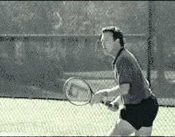
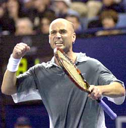
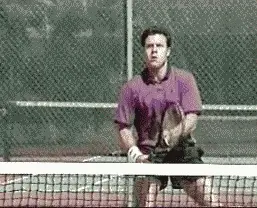

Previous: How to Deal with Bad Calls | 🏠 Mental Game Home | Next: Increasing Confidence
In your mind’s eyes
Jim Loehr
Can you "see" yourself playing the tennis you really want to play?
What would it be like to play perfect tennis? Imagine your strokes are flowing, you're hitting shot combinations and aggressive winners, serving and returning with great accuracy, rhythm, and power.
You play a great match and beat a tough opponent, someone you've never beaten before, or maybe someone you didn't think you belonged with on the court.
"Impossible!" you say. "I just can't see it." "I'm simply not capable of beating that person or playing that well."
In a literal sense, that may be true. Why? Because our mental pictures, what we can and cannot see ourselves do inside our own minds, determines what we are capable of doing on a tennis court.
To play your best tennis, to stay positive, to motivate yourself through feelings of optimism and confidence, requires that you have the capacity to see or visualize yourself doing exactly those things.
Through visualization you can eliminate negative images and replace them with positive ones.
To achieve your Ideal Performance State, you have to imagine that you can! But the truth is, many players are limited in their ability to do this by negative and self-defeating images.
Your potential in tennis is directly tied to the specific ability to see yourself perform inside your own mind. Negative images set limits on performance, limits that may be, in fact, below your real potential.
Through visualization, you can learn to eliminate this barrier. To do it, you must eliminate the negative images that are holding you back and replace them with positive ones. Images of yourself playing the kind of tennis you are really capable of playing.
A study of elite athletes across all sports found that 85% believed visualization was a critical part of their competitive success. In tennis, this has included many of the greatest players of all time, from Pancho Gonzales to Chris Evert to John McEnroe.
How can you, as a competitive or recreational player, make this process work so that you visualize the way great athletes do?
 Develop clear visual models of the strokes you want to develop. |
First, let's define what we mean by visualization more precisely. Visualization is the systematic creation or the strengthening of positive mental images. It could also be called positive image programming. It is learning to communicate information to your body in a different medium, in imagery, rather than words.
Research has shown the human mind cannot distinguish physical activity from the experience of vividly imagining it. Imagery is the connecting link between the mind and body in athletic performance. Regular practice can improve your ability to communicate this information to your muscles under competitive pressure.
To begin developing your visualization routines, create a quiet, relaxed environment where you're not likely to be distracted. You may want to play soft music or dim the lights. Relax by doing a few slow deep breaths. This will calm your mind and allow you to focus on the images.
Now, close your eyes and go deep inside your mind's eye. To maximize the effectiveness of the process, see yourself in your mind's eye as if you were actually performing on the court. In your mind's eye, become the performer, and as you see yourself executing the movements mentally, try to feel what is happening.
Visualize the attacking sequences you want to play.
You visualization training should be done in short periods of about five minutes at a time-it's not the duration, it's how relaxed and concentrated you are that makes the difference.
Pick your imagery for each session from some of the suggestions below, and work with your coach to create your own as well. Specifically, there are three areas in which visualization can make a major impact on your ability to perform.
The first is in the technical area, the technical execution of strokes. Every player should develop clear visual models of the stroke patterns they want to develop. If you are working to develop a new stroke or shot to correct a long-term bad habit, you should begin by seeing yourself executing easy, basic patterns as if you were actually hitting slowly with a ball machine or a practice partner.
Focus on key technical details, full shoulder turns on ground strokes. Contact in front on your volleys or whatever you or your coach or teaching pro are working to change.
Two. Shot combinations and winning points. For example, if you're trying to develop an attacking style, create images of yourself approaching the net in a variety of situations.
Visualize staying positive and continuing to fight in difficult or unexpected competitive circumstances.
If you play from the backcourt, follow the same process. Learn to visualize sequences of how you win points. For example, working the ball crosscourt to the open court, or passing an opponent who comes in off both sides.
And three. The third area in which visualization training can be critical is your improvement in dealing with difficult mental or emotional situations on the court. One of the worst things that can happen to a player is to be surprised on the court by an unexpected problem or obstacle. Through visualization, you can practice dealing with practically any situation before it occurs in competition.
For example, visualize yourself staying positive and fighting when you go down a break or a set. If you normally get angry or negative, imagine those feelings coming up. Now, practice letting them go and replacing them with a positive counter message, such as: "I can do it." "Come on, let's go." "Fight!"

Visualize yourself remaining in your ideal performance state in the face of all those obstacles.
Other typical situations to rehearse, making a series of uncharacteristic errors, or missing one or more easy balls at critical times.
Another important area. How to react when you get a bad call. Rehearse staying calm and focused, verifying the call from your opponent, and, if necessary, requesting a linesman.
 Go on the court believing you really can win. |
Review any other specific incidents in your matches when you have broken down mentally. Now, rehearse the same situations reacting positively in overcoming the challenge that they posed.
Finally, put all these situations together. Visualize a few games, a set, or even an entire match against an opponent you want to beat. Determine the specific patterns you need to win. Rehearse them mentally until you can see and feel yourself executing them perfectly.
Now you can go on the court believing you really can win. Research has shown that the combination of this kind of mental, and physical, practice is far more effective in producing change than physical practice alone.
Making visualization a regular part of your work can be the key to taking your game to the next level.
Combined with the other techniques I have shared in this series of articles, visualization provides the final tool you need to become the mentally tough player you really want to be.
|
 | Jim Loehr is a legendary pioneer in the field of human performance. An elite tennis player himself who still competes nationally in USTA events, Jim created the field of Mental Toughness training with his revolutionary study of elite pro players. He has been one of the most influential voices in tennis and tennis coaching for over 30 years, and is the author of multiple best selling books. He has expanded his influence far beyond sports with the creation of the Human Performance Institute where he and his staff have worked with hundreds of leaders in business, law enforcement, and military special forces. For the last decade he has also directed an academy for junior players helping young people learn what winning in life really means.
| Jim Loehr is a legendary pioneer in the field of human performance. An elite tennis player himself who still competes nationally in USTA events, Jim created the field of Mental Toughness training with his revolutionary study of elite pro players. He has been one of the most influential voices in tennis and tennis coaching for over 30 years, and is the author of multiple best selling books. He has expanded his influence far beyond sports with the creation of the Human Performance Institute where he and his staff have worked with hundreds of leaders in business, law enforcement, and military special forces. For the last decade he has also directed an academy for junior players helping young people learn what winning in life really means.
Previous: How to Deal with Bad Calls | 🏠 Mental Game Home | Next: Increasing Confidence